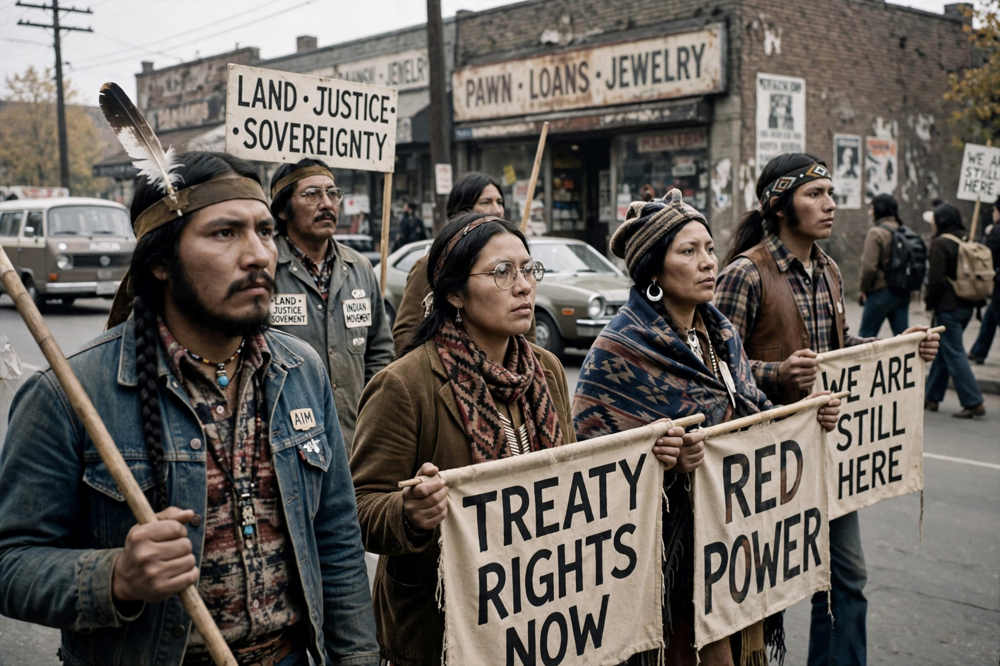

From Wikipedia, the free encyclopedia

Native American rights are the legal and political rights of Native Americans in the United States, arising from their status as citizens of sovereign tribal nations as well as of the United States. They include tribal sovereignty, treaty rights to land and resources, voting rights, religious freedom, and rights to hunting, fishing, and cultural practices.
The US Constitution recognizes tribes as distinct political entities, and Supreme Court decisions of the 1830s (the Marshall Trilogy) established tribes as "domestic dependent nations" whose sovereignty predates the Constitution. The federal government holds a trust responsibility toward tribes. Major legislation includes the Indian Reorganization Act of 1934, which ended allotment and encouraged tribal self-government, and the Indian Self-Determination and Education Assistance Act of 1975.
Between 1778 and 1871 the United States ratified hundreds of treaties with tribal nations, many ceding vast lands in exchange for reserved rights and services. Twentieth-century litigation reaffirmed many treaty fishing and hunting rights, notably the Boldt Decision of 1974 in the Pacific Northwest. The Indian Claims Commission (1946–1978) adjudicated historical land claims, and landmark settlements such as the Alaska Native Claims Settlement Act of 1971 conveyed land and compensation to Alaska Natives.
Native Americans gained US citizenship with the Indian Citizenship Act of 1924, though some states barred them from voting into the 1960s. The American Indian Movement (AIM), founded in 1968, led protests including the occupation of Alcatraz (1969–1971) and the occupation of Wounded Knee (1973). The Indian Civil Rights Act of 1968 applied most Bill of Rights protections to tribal governments.
Ongoing concerns include protection of sacred sites, repatriation of remains and artifacts under NAGPRA (1990), missing and murdered Indigenous women, water rights, and the jurisdiction questions addressed in cases such as McGirt v. Oklahoma (2020), which affirmed that much of eastern Oklahoma remains reservation land for criminal-law purposes.